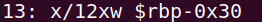

Display- can be used to create a continuously-updating disassembly display. somewhat similar to linux "tail".
The following will create an updating stack on each step, showing also rip:
display/10i $rip
display/10x $rsp
display/12wx $rbp-0x30
The display will have a number (13 in this example):

To remove:
undisplay <number>